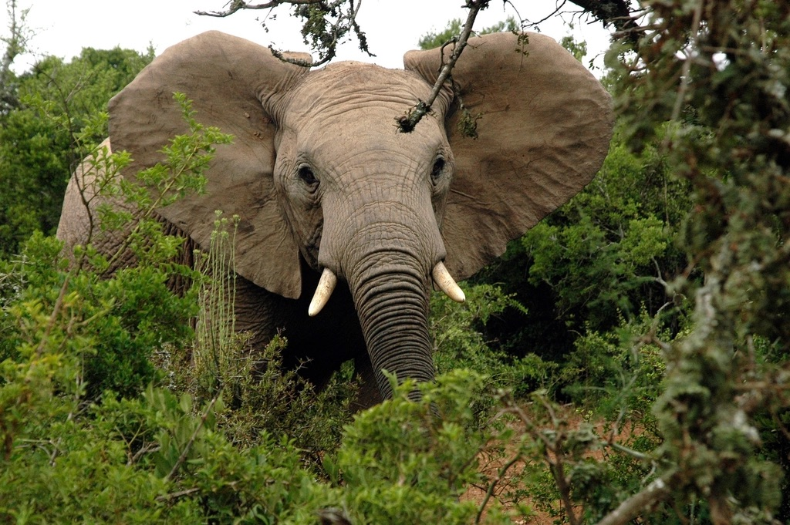

Some of my hobbies I like to do in my downtime include reading, crocheting, skateboarding, and listening to music. I am a big MARVEL fan and my favorite animal is an elephant. The purpose of this portfolio is to show my development in computer science throughout the year. At the beginning of the year, I barely knew what computer science entailed. I thought it was all making websites and complex apps, but now I know it is so much more than that. It is innovation, and a creation of a better world through technological advancements and the ability to create algorithms and projects to help the human race. I’ve learned that all big project start from the basic codes and functions, and how to build off of the basic codes.